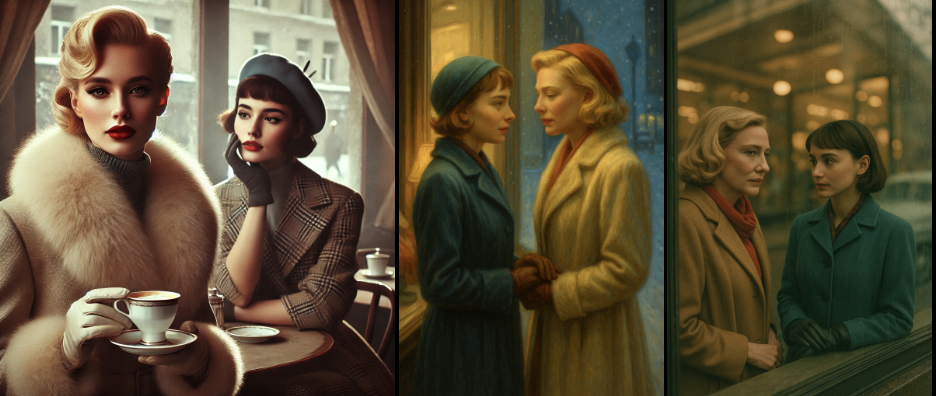
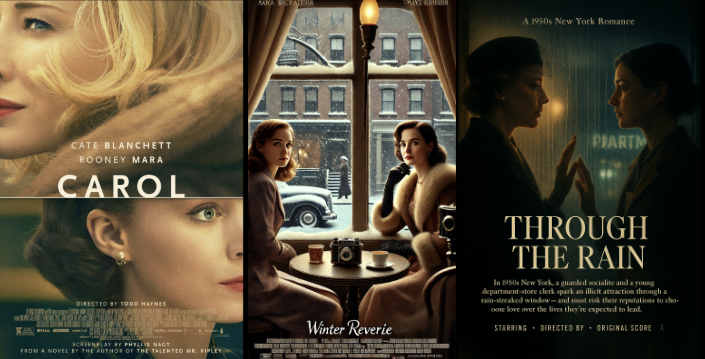

Close-Up: Carol
Tracing one film's trajectory through the algorithm
Looking closely at how one film is filtered through algorithms, we can trace some larger patterns in specific circumstances.
Images and Stills

Above is a series of images and stills produced by Dall-E and GPT-5 in response to the prompt to create an image or still inspired by the Lesbian film Carol. We can see the difference between Dall-E's rendering, which shows the hallmark "hotness" (a term coined by Atlantic Writer Caroline Mimbs Nyce to describe the tendency of earlier Dall-E models to create perfectly doll- or action-figure-adjacent humans). Further significant are the meticulously rendered props, clothes, and background, while the faces replicate a bored nonchalance that creeps into expressionlessness. The effect is one of a more stylized than connected pair of possible lovers.
The following two images, created by GPT-5, mitigate some of Dall-E's exaggerations but introduce new particularities in the process. The middle image shows GPT-5's response to a request for an image inspired by the Lesbian film Carol. GPT-5 chose to create what it called an oil painting that leans much more heavily on the source material. The two figures depicted aren't NOT Rooney Mara and Cate Blanchett.
When prompted to create a Carol-inspired still (rather than simply an image), the model produces a visual similar to the previous one, doubling down on the film's protagonists' recognizable features. While in most cases the model managed to blur the recognizability of its inspiration, in the case of Carol, it clearly failed, reanimating questions about copyright infringements and failing safeguards. When asked how the model adjusted my broad prompt to create the still image, GPT-5 ended its expanded prompt description with the following: "…no celebrity likenesses, do not copy any specific frame from the film." An instruction it clearly didn't follow.
Aside from producing images of recognizable actors, the hyper-homogenized hotness problem present in Dall-E's renderings has been mitigated, and the figures' compositions make the intimacy between the women more legible. Although their facial expressions remain curiously disconnected.
Notable beyond that is the shift in the color spectrum toward a more muted, amber tone, and the accompanying shift away from a focus on props and background toward mood lighting, as reflected in the model's revision of my prompt. The model instructed itself to adhere to "...cinematic framing, moody low-key lighting, subtle color grading, natural skin tones…" As observed in a previous section on changes in images, these changes between models' outputs show an aesthetic shift that simply relocates where new homogeneities emerge.
Posters

The corresponding poster series for Carol is telling as well. The same observations made about the images above hold true here. The shift of focus from detailed background to color and ambience/ambient lighting is emblematic of the model's take on the film prompts. (To see this aesthetic shift in aggregate, look for the section Queer Poster Bot.)
The default poster concept doesn't seem to allow for fragmented or juxtaposed images, so the posters generated by the models serve as further examples of how aesthetic homogeneity creeps into visual representation unless a user confidently prompts against it. Another noteworthy aesthetic overlap is the mirror quality of many posters, specifically in the GPT-5 version, Through the Rain, where a pane of glass stands in for a mirror. Lesbians seem to exist in exclusive pairs, frequently positioned facing each other as if facing a mirror.
Title Transformations
A closer look at the title remixes is noteworthy as well. It's understandable that the name Carol would disappear from any "inspired by" version, but what is curious is that no other name appears in any of the versions (this is true for the entire data set). Again, this is solely an observation about which aspects of a film's data the algorithm consistently privileges when working with the prompt anchored in the words "inspired by" – and in the case of Carol (and several others), available data points about the weather win out. The winterland of Carol, an environmental attribute, becomes the central term in Dall-E 4's poster version, which names the film Winter Reverie and then is transformed into rain, Through the Rain, as the defining aspect of the poster and title created by GPT-5.
A title that once named a protagonist and, simultaneously, the yearning for that protagonist has become a generic romance theme. The algorithmic reduction of every film poster and title in the database to an avatar of a genre-fiction, trope-evoking basic romance story is astonishing, though not unexpected.
For another case study examining these patterns in a different context, see Close-Up: Pariah.